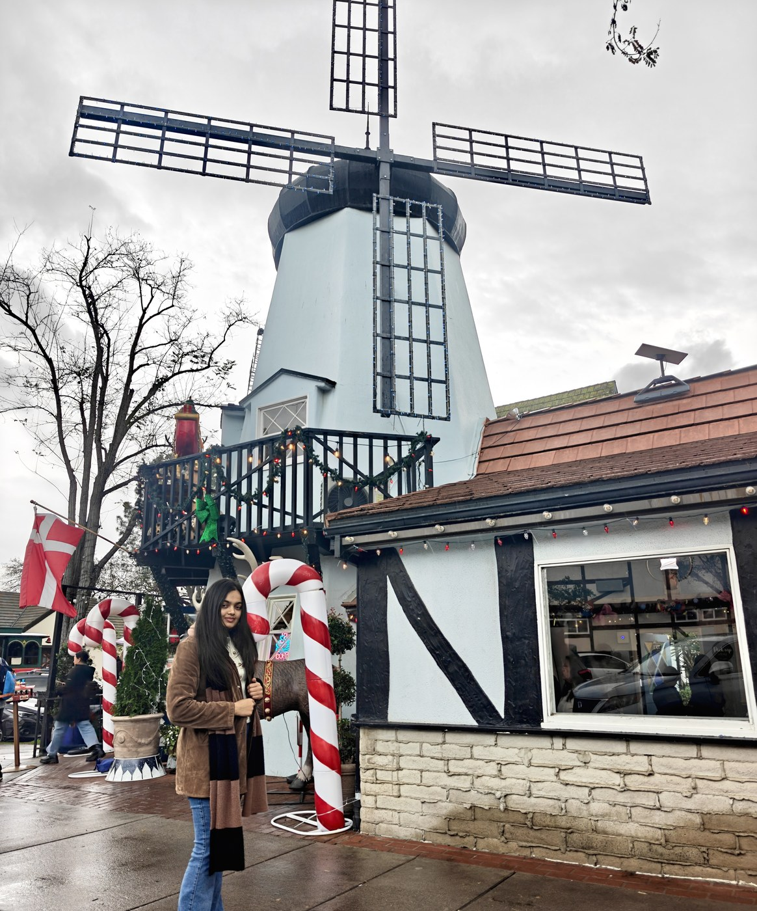

I'm an MS candidate in Natural Language Processing at UC Santa Cruz, where I work with Dr. Leilani Gilpin and Dr. Chenguang Wang. I received my undergraduate degree from the University of Arizona and was a Research Scholar at the University of Edinburgh, working on neuro-symbolic AI.
I am interested in predictive evaluation for scalable learning systems; continual learning, memory, and post-training without easily exploitable rewards; verification for long-horizon agents; and AI systems that can revise beliefs from evidence and support scientific discovery.
My research focuses on reinforcement learning, post-training, verification, and long-horizon agents: how models learn from feedback, when their reasoning fails, what they should remember, and how to build training signals they cannot easily exploit.
I'm increasingly interested in AI for scientific discovery - systems that can revise beliefs when evidence contradicts them, challenge their own assumptions, and help solve some of society's hardest problems.
I also contribute to rLLM, an open-source framework for reinforcement learning with language models.
Outside my main research, I like learning from first principles. Right now, I'm reading about Peter Turchin's work on Cliodynamics and re-implementing core ideas behind AlphaFold to understand how scientific reasoning and discovery can be encoded computationally.
I want to build AI systems that don't just sound intelligent: they learn from evidence, know when they're wrong, help us discover what we couldn't discover alone, and tackle problems that matter at societal scale.
News
